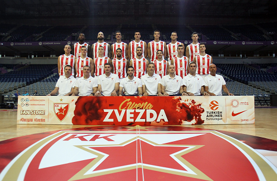
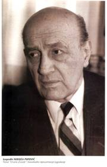
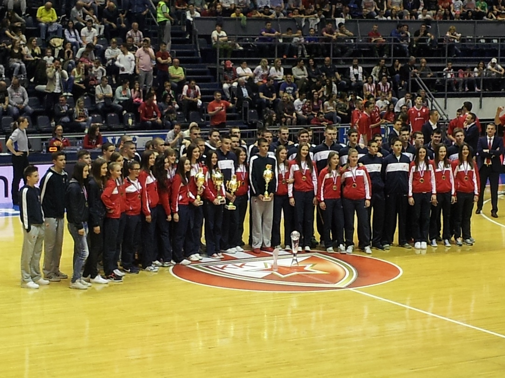
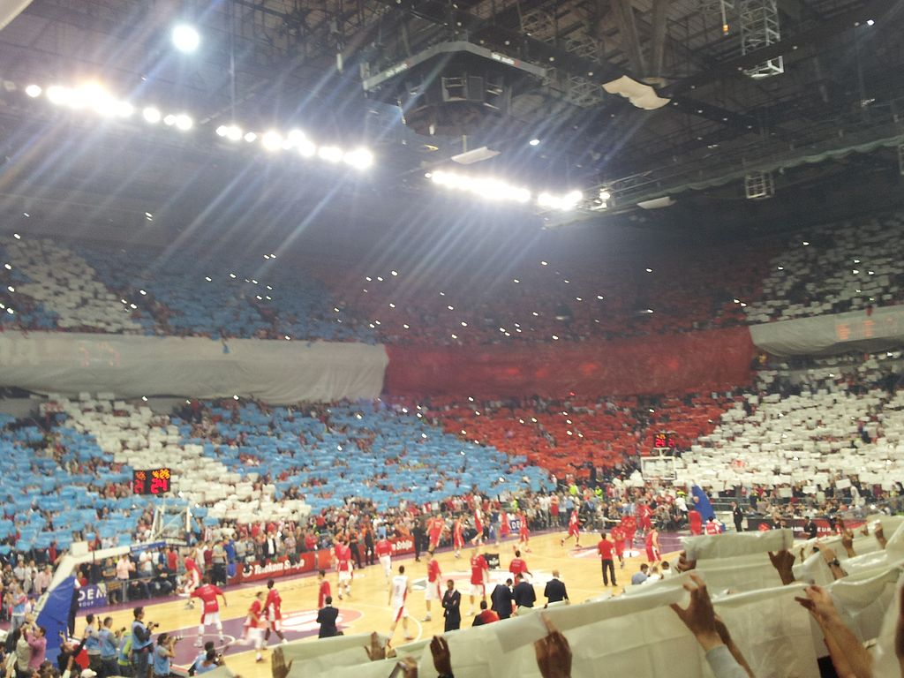

КК Црвена звезда
Је српски професионални кошаркашки клуб из Београдa. Део је спортског друштва Црвена звезда. Црвена звезда се такмичи у Кошаркашкој лиги Србије и домаћем Купу Радивоја Кораћа, и није испадао из прве националне лиге. Такође, чини Јадранску кошаркашку асоцијацију и такмичи се у АБА лиги, која одређује који ће се тимови такмичити у Евролиги а који у Еврокупу. Према УЛЕБ-овој листи Звезда је најбоље рангиран клуб од свих српских клубова, као и свих клубова из Јадранске лиге.
Црвена звезда као домаћин утакмице игра у хали Пионир, саграђеној 1973, са капацитетом од 5.878 седећих места, док утакмице у Европским такмичењима игра и у Штарк арени са предвиђеним капацитетом од 18.386 седећих места. Навијачи Црвене звезде се називају Делије.
Сарадња са ФМП-ом
Тим Црвене звезде за сезону 2011/12.
После вишегодишњих покушаја за интеграцијом са ФМП-ом из Железника, коначно је дошло до споразума 12. августа 2011. године.
Већ у првој сезони управа је учинила крупне кораке ка консолидацији клуба. Урађен је детаљан план реорганизације клуба са планом враћања дугова у периоду од пет година, према унапред припремљеном плану реорганизације (УППР).УППР је правни институт регулисан Законом о стечају, и он је настао као алтернатива банкротству у стечају.Тиме је омогућено да се у наредним сезонама уђе са знатно мањим теретом, али са обавезом редовног испуњавања обавеза из плана реорганизације. Тим добија и генералног спонзора, па налик другим клубовима додаје у имену и име спонзора — Дива (дистрибутер воде). За председника новог клуба изабран је Небојша Човић.
 Историја
Кошаркашки клуб Црвена звезда као посебна секција основан је истог дана када и Спортско друштво, 4. марта 1945. године. Први руководилац кошаркашке секције била је Мира Петровић. Међутим, веома брзо је бригу о Звездиним кошаркашима преузео Мирко Аксентијевић-Бата. Због последица рањавања током Другог светског рата, он није могао да игра, али зато је све своје време посветио организацији рада кошаркашке секције. Убрзо му се прикључио и Небојша Поповић, па су њих двојица заједно радили на унапређењу кошаркашке екипе Црвене звезде.
У првим месецима постојања Црвене звезде највише се радило на логистици: поправљао терен, набављали кошеви, шили дресови и остало. Када је све ово учињено, започета је селекција играча који ће освојити велики број одличја. Првих десет година постојања, представља златно доба КК Црвена звезда. Освојено је десет узастопних титула државног првака. Синоним за кошарку био је Мали Калемегдан, где је Звезда и играла у првим годинама свога постојања. Један од најчешћих гледаоца на трибинама био је и једини српски нобеловац Иво Андрић, коме је нуђено да буде председник клуба.Тадашњи тим био је предвођен петорком: Небојша Поповић, Тулио Роклицер, Александар Гец, Ладислав Демшар и Срђан Калембер.Поред врхунских резултата, Београђани ће памтити тадашњу екипу и по духовитим потезима којима су одушевљавали гледаоце. Срђан Калембер ће заједно са саиграчем Миланом Бјегојевићем остати упамћен као играч са највише националних титула освојених са Црвеном звездом — и то укупно 9 у периоду од 1946. па до 1954. године. Ови успеси су били утолико већи с обзиром на декрет тадашње власти, по којој су сви Звездини играчи који су били војна лица морали да пређу у редове ривалског клуба Партизана. Међу њима најпознатији су: браћа Шапер, Ратко Влаховић, Браца Алагић и Александар Николић. Александар ће се међутим вратити у Црвену зведу после само једне сезоне и учествовати у освајању три националне титуле. Пар година касније у Партизан је прешао и Борислав Станковић како би добио пасош.
Млађе категорије
Иако је сва пажња углавном усмерена на резултате првог тима, Црвена звезда има дугу традицију у раду са млађим категоријама. Наравно, све млађе селекције су и у резултатском смислу увек биле у врху како домаћих тако и међународних такмичења. Чак и када је први тим резултатски имао лоше сезоне, у млађим категоријама су изникли многи касније веома успешни играчи. Најважнији и најпознатији изданци Звездине школе кошарке су свакако Мока Славнић, Бобан Јанковић, Небојша Илић, Саша Обрадовић и Игор Ракочевић. Ипак треба истаћи и друге играче који су своје каријере градили пре свега у другим клубовима, попут Владимира Радмановића, Милоша Вујанића, Милка Бјелице и многих других.
Додатни квалитет у селекцији млађих категорија доноси фузија са ФМП Железником. Том приликом комплетне младе селекције постају Звездине селекције са могућношћу коришћења одличне инфраструктуре. Ту је пре свега тренажни центар са салама на Чукарици као и хала у Железнику. Успеси Звездиних млађих селекција постају још значајнији. Тако Звездини јуниори после више покушаја успевају да освоје Евролигин Најк турнир 2014. године у Милану, и постају незванични прваци Европе у јуниорској конкуренцији.
Циљ млађих категорија је пре свега формирање потпуних играча, али и њихово школовање које је омогућено јединственим системом образовања које се нуди деци. Поред тога, велики број играча свих узраста део је млађих репрезентативних селекција. Тако је само у 2014. години укупно 12 кошаркаша Звезде (6 у кадетском, 3 у јуниорском и 3 у узрасту до 20 година) било део неке од репрезентативних селекција Србије, које су при томе освојиле 2 медаље на првенствима на којима су наступале.
Навијачи
Од самог заснивања клуба најистакнутије личности друштва биле су често виђене на утакмицама на Малом Калемегдану. Један од честих посетилаца кошаркашких утакмица и мушке и женске селекције Црвене звезде је био Иво Андрић. Све утакмице су од почетка биле веома посећене. Популарност је расла са сталним успесима и кошаркашког клуба, али пре свега фудбалског клуба. Играчи свих клубова у оквиру Спортског друштва често међусобно посећују утакмице у свим такмичењима. Црвена звезда је српски клуб са највећим бројем навијача према већини истраживања која су спроведена у Београду, а и на територији читаве Србије.
Организована група навијача Црвене звезде се називају Делије. Ова навијачка група настала је уједињењем дотадашњих мањих навијачких група 7. јануара 1989. Делије представљају једну од најпознатијих навијачких група на свету. Према избору организације „Свет Ултраса” која на друштвеним мрежама окупља преко 400.000 навијача, група Делије је изабрана за најбољу навијачку групу на свету у 2014. години. Навијачи Црвене звезде и Олимпијакоса развили су дубоко пријатељство. Навијачи оба тима су себе назвали „Православна браћа” (енгл. Orthodox Brothers). У ову братску унију навијача касније су се укључили и навијачи Спартака из Москве. Управо су навијачи клуба са Малог Калемегдана приредили рекордну гледаност неке кошаркашке утакмице под покровитељством УЛЕБ-а. То се десило током четвртфинала Еврокупа 2014. године против екипе Будивељника, када су у Комбанк арени била 24.232 навијача.Навијачка група Делије од почетка учествовања Црвене звезде у Јадранској лиги не посећује утакмице које Звезда игра у овом такмичењу, или се бар не ради о организованом навијању. Делије се иначе противе игрању свих клубова из СД у регионалним лигама,иако ова регионална лига доноси проходност за сва такмичења под покровитељством УЛЕБ-а. И поред тога остали навијачи редовно посећују утакмице, па је посета често међу најбољим у Јадранској лиги.
Жалба!
Потпредседник Фудбалског савез Србије Саво Милошевић и генерални секретар Савеза Јован Шурбатовић потврдили су да ће уложити жалбу ФИФА звог тенденциозног суђење Феликса Бриха, али и провокација албанских фудбалера и навијача на мечу са Швајцарском у Калињинграду. Више о томе
Дисциплинци Европске куће фудбала (УЕФА) задужени за контролу финансијског фер плеја у понедељак ће званично изрећи казну Милану. Више о томе
Панатинаикос ипак у Евролиги
Иако је грчки шампион најављивао да би могао да иступи из елитног такмичења и од следеће сезоне заигра у ФИБА Лиги шампиона, ипак је на заједничком састанку Зелених и Евролиге одлучено да ће и следеће сезоне Панатинаикос бити у друштву најбољих.
Реал Мадрид-Ливерпул
Њихови предходни састанци.
Са финалистима ѕа УЕФА лигу, коначно можемо видети све голове Реал Мадрида и Ливерпула.